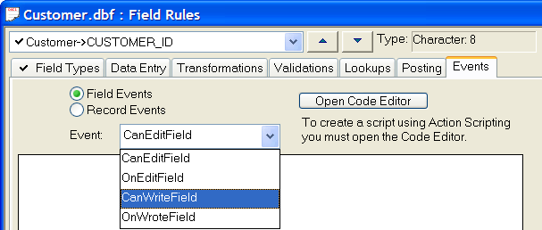

Creating a Field Rule Event
Events are pre-named Alpha Anywhere actions that are associated with certain Alpha Anywhere components. For example, clicking on a button on a form initiates an event called OnPush. When you click on a field, form or browse, a series of events happen. This series includes the OnArrive event for the field you clicked on, and the OnDepart event for the field you left. Alpha Five lets you attach Xbasic code that executes when specific events like these occur.

For more information, see Field Rule Field Events and Field Rule Record Events.
In the Field Rules Editor you can enter Xbasic code for the following field events:
|
Event Name |
Occurs |
|
CanEditField |
Before the cursor enters the field. |
|
OnEditField |
After the cursor enters the field. |
|
CanWriteField |
Before the cursor exits the field. |
|
OnWroteField |
After the cursor exits the field. |
and for the following record events:
|
Event Name |
Occurs |
|
CanChangeRecord |
Before entering Change mode. |
|
OnChangeRecord |
After entering Change mode. |
|
CanDeleteRecord |
Before deleting a record. |
|
OnDeleteRecord |
After deleting a record. |
|
CanEnterRecord |
Before moving to the new record. |
|
OnEnterRecord |
After moving to the new record |
|
CanMarkRecord |
Before marking a record. |
|
OnMarkRecord |
After marking a record. |
|
CanSaveRecord |
Before saving a record. |
|
OnSaveRecord |
After saving a record. |
|
CanUnmarkRecord |
Before unmarking a record. |
|
OnUnmarkRecord |
After unmarking a record. |
Select the table in the Table/Sets tab of the Control Panel.
Select Design > Field Rules.
If you are creating field event, select the field in the drop-down list box at the upper left corner of the dialog box.
Display the Events tab.
Click the Field Events radio button if you are creating a field event. Otherwise, click the Record Events radio button.
Select the event from the Event list box.
Optionally, enter the Xbasic code into the text box.
 Note : The a_current_field
system variable is a pointer to the current field. The a_current_field.name_get()
method returns the name of the current field.
Note : The a_current_field
system variable is a pointer to the current field. The a_current_field.name_get()
method returns the name of the current field.
Optionally, click Open Code Editor to use all the resources of the full Xbasic development environment.
See Also
Field Rule Field Events, Field Rule Record Events